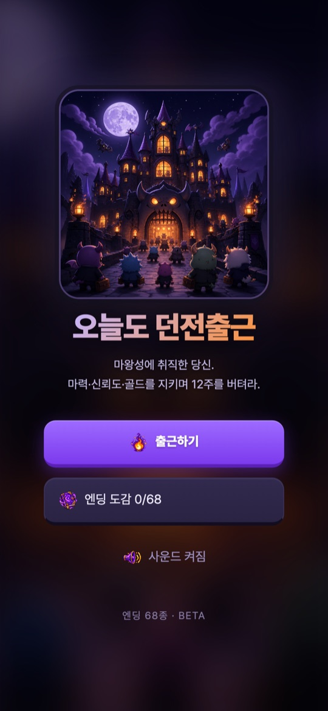
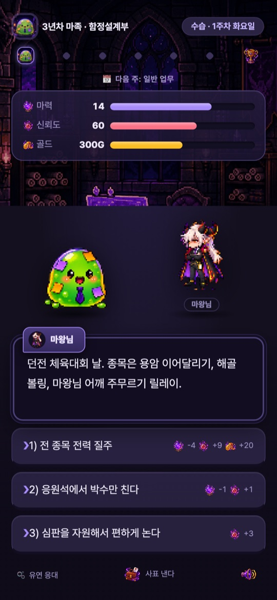
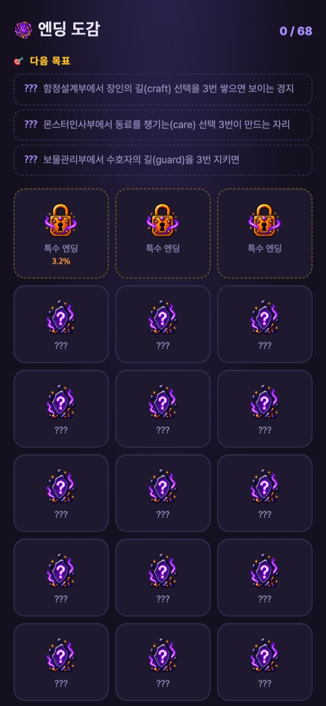

마왕성에 취직한 몬스터가 되어 마력·신뢰도·골드 세 가지 수치를 지키며 12주를 버티는 판타지 직장 생존 시뮬레이션입니다. 현재는 브라우저에서 바로 하는 웹 베타로 공개되어 있으며, 타이틀 화면에 ‘엔딩 68종 · BETA’라고 표시됩니다.
게임의 기본 흐름
- 타이틀에서 출근하기를 누르고 ‘수습 입사 — 종족만 고르면 끝’ 화면에서 종족을 고릅니다.
- 부서가 자동으로 발령되고(확인 당시 ‘자동 발령 — 함정설계부 · 3년차 (수습 6주)’ 안내), 1주차부터 근무가 시작됩니다.
- 매 장면마다 마왕님 등이 상황을 던지고, 세 가지 선택지 중 하나를 고릅니다. 선택지 옆에 마력·신뢰도·골드가 얼마나 바뀌는지 미리 표시됩니다.
- 주가 바뀔 때 ‘주말 정산’으로 수치가 조정되고, 위쪽에 다음 주 일정(예: 다음 주: 일반 업무)이 나옵니다.
- 선택이 쌓이면 다양한 결말에 도달하고, 본 엔딩은 엔딩 도감에 모입니다.
화면과 조작
- 상단: 내 캐릭터와 연차·부서, 직급과 주차·요일(예: 수습 · 1주차 화요일), 주간 진행 점, 마력·신뢰도·골드 막대.
- 선택지: 1)~3) 버튼을 눌러 고릅니다. 아이콘 옆 숫자가 각 수치의 변화량입니다.
- 종족 능력: 왼쪽 아래에 종족별 능력 버튼이 있습니다(확인 당시 고블린은 ‘흥정’, 슬라임은 ‘유연 응대’). 누르면 ‘대기 (탭=해제)’ 상태가 되고, 다시 누르면 해제됩니다.
- 그 밖의 버튼: 진행 중에 나타난 ‘도전장’, 게임을 그만두는 ‘사표 낸다’, 오른쪽 아래 소리 버튼. 타이틀에서는 ‘사운드 켜짐’으로 소리를 끄고 켭니다.
처음 시작하기
- 아래 웹 베타 링크를 엽니다. 설치 없이 휴대폰이나 컴퓨터 브라우저에서 바로 시작합니다.
- 출근하기를 누릅니다.
- 종족을 고릅니다. 고블린(골드 +60, 마력 -2), 스켈레톤(마력 +3, 골드 -40), 슬라임(신뢰도 +10, 마력 -1), 뱀파이어(마력 +2, 신뢰도 -5, 골드 +20) 가운데 하나입니다.
- 장면마다 선택지 옆의 수치 변화를 보고 하나를 고릅니다.
- 판이 끝나면 타이틀의 엔딩 도감에서 모은 엔딩과 ‘다음 목표’ 힌트를 확인합니다.
초보자를 위한 참고 팁
아래는 2026년 10월 20일에 공개 웹 베타를 직접 실행해 본 화면을 바탕으로 한 제안입니다. 베타라서 수치와 규칙이 바뀔 수 있습니다.
- 세 수치를 함께 보세요. 한 선택지가 신뢰도를 크게 올리는 대신 마력이나 골드를 깎는 경우가 많습니다. 막대가 한쪽으로 바닥나지 않게 고르세요.
- 종족은 시작 수치로 고르세요. 처음 화면에 적힌 보너스와 페널티가 종족마다 다르니, 부족해지기 쉬운 수치를 보완하는 종족을 골라 보세요.
- 다음 주 일정을 확인하세요. 화면 위쪽에 다음 주가 어떤 주인지 미리 표시됩니다.
- 엔딩 도감의 다음 목표를 활용하세요. 예를 들어 ‘함정설계부에서 장인의 길(craft) 선택을 3번 쌓으면 보이는 경지’처럼 특정 엔딩으로 가는 힌트가 나옵니다.
- 소리가 부담되면 끄세요. 타이틀의 사운드 버튼이나 게임 중 오른쪽 아래 버튼을 쓰세요.
스크린샷
2026년 10월 20일에 공개 웹 베타(ricecookeytodayis.vercel.app)를 휴대폰 크기(390×844) 브라우저로 직접 실행해 캡처한 화면입니다. 홍보용 이미지가 아니며, 이벤트 문구와 수치는 판마다 다릅니다.



자주 묻는 질문
- 설치해야 하나요?
- 아닙니다. 웹 베타는 브라우저에서 링크를 열면 바로 시작합니다. 앱 스토어 출시는 확인되지 않았습니다.
- 베타라는 건 무슨 뜻인가요?
- 정식 출시 전 공개 버전이라는 뜻입니다. 이벤트, 수치, 엔딩 수(현재 68종 표시)가 예고 없이 바뀔 수 있습니다.
- 진행 상황이 저장되나요?
- 이 페이지에서는 저장 방식과 기기 간 이어하기를 확인하지 못했습니다. 브라우저 데이터를 지우거나 다른 기기로 바꾸면 기록이 이어지지 않을 수 있습니다.
- 엔딩 도감의 퍼센트 숫자는 무엇인가요?
- 일부 칸에 퍼센트가 표시되지만 화면에 설명이 없어 이 페이지에서는 의미를 단정하지 않습니다.
- 오류나 의견은 어디로 보내나요?
- 화면 캡처와 브라우저 종류를 적어 ricecookey.help@gmail.com으로 보내 주세요. 베타 의견도 환영합니다.
플레이 링크
웹 베타
휴대폰 세로 화면 기준으로 확인했습니다. 앱 스토어 판매 페이지는 없습니다.
문의
질문, 요청, 버그 제보: ricecookey.help@gmail.com
참고 자료와 확인 범위
- 오늘도 던전출근 웹 베타 — 2026년 10월 20일에 타이틀, 종족 선택, 1~3주차 장면, 엔딩 도감을 직접 확인
이 페이지는 공개 웹 베타에서 직접 본 화면 문구만 다룹니다. 베타는 수시로 바뀔 수 있으며, 게임 안의 표시가 이 페이지보다 우선합니다.
English
Today Dungeon Commute is a fantasy workplace survival sim: you are a monster hired at the Demon Lord's castle, and you must last 12 weeks while keeping three stats in balance — mana, trust and gold. It is currently a public web beta that runs in the browser, and the title screen reads “68 endings · BETA”. The game is in Korean.
How it works
- On the title screen tap Go to work (출근하기), then pick a race on the “probation hire — just pick your race” screen.
- You are assigned to a department automatically (when checked: “auto assignment — Trap Design · year 3 (6-week probation)”), and work starts in week 1.
- Each scene, the Demon Lord or others present a situation and you choose one of three options. Each option previews how mana, trust and gold will change.
- At the end of each week a weekend settlement adjusts your stats, and the top of the screen shows next week's schedule (for example, “next week: regular work”).
- Your choices lead to different endings, and the ones you reach are collected in the Ending collection (엔딩 도감).
Screens and controls
- Top: your character with year and department, rank with week and weekday (for example, probation · week 1 Tuesday), weekly progress dots, and mana, trust and gold bars.
- Choices: tap buttons 1) to 3). The numbers next to the icons are the stat changes.
- Race ability: a race-specific ability button sits at the bottom left (when checked, Haggle for the goblin and Flexible Response for the slime). Tapping it puts it on standby (“tap to cancel”), and tapping again cancels.
- Other buttons: a Challenge (도전장) button that appeared during play, Resign (사표 낸다) to quit the run, and a sound button at the bottom right. On the title screen, the sound button turns audio on and off.
Getting started
- Open the web beta link below. It starts in a phone or desktop browser with nothing to install.
- Tap Go to work.
- Pick a race: goblin (gold +60, mana -2), skeleton (mana +3, gold -40), slime (trust +10, mana -1) or vampire (mana +2, trust -5, gold +20).
- In each scene, check the stat changes next to the options and choose one.
- After a run, open the Ending collection from the title screen to see your endings and the “next goal” hints.
Beginner tips
These suggestions are based on screens we saw when we played the public web beta on October 20, 2026. Because it is a beta, numbers and rules may change.
- Watch all three stats. Many options raise trust a lot but cost mana or gold. Choose so that no bar runs out.
- Pick a race by its starting stats. Each race lists different bonuses and penalties, so try one that covers the stat you tend to run short of.
- Check next week's schedule. The top of the screen shows what kind of week is coming.
- Use the Ending collection's next goals. Hints such as “stack the craft path three times in Trap Design” point toward specific endings.
- Turn the sound off if needed. Use the sound button on the title screen or at the bottom right during play.
Screenshots
Our own captures of the public web beta (ricecookeytodayis.vercel.app), taken on October 20, 2026 in a phone-sized (390×844) browser. They are not promotional images, and event text and numbers vary from run to run.
FAQ
- Do I need to install anything?
- No. The web beta starts as soon as you open the link in a browser. No app store release has been confirmed.
- What does beta mean here?
- It is a public pre-release version. Events, numbers and the number of endings (currently shown as 68) may change without notice.
- Is my progress saved?
- We did not confirm how progress is saved or whether it carries across devices. Clearing browser data or switching devices may lose it.
- What are the percentages in the Ending collection?
- Some slots show a percentage, but the screen doesn't explain it, so this page doesn't guess what it means.
- Where do I send bugs or feedback?
- Send a screenshot and your browser name to ricecookey.help@gmail.com. Beta feedback is welcome.
Play link
Web beta
Checked on a portrait phone-sized screen. There is no app store listing.
Contact
Questions, requests and bug reports: ricecookey.help@gmail.com
References and scope
- Today Dungeon Commute web beta — title, race selection, weeks 1–3 and the Ending collection checked first-hand on October 20, 2026
This page covers only on-screen text we saw in the public web beta. The beta changes often, and what the game shows takes precedence over this page.